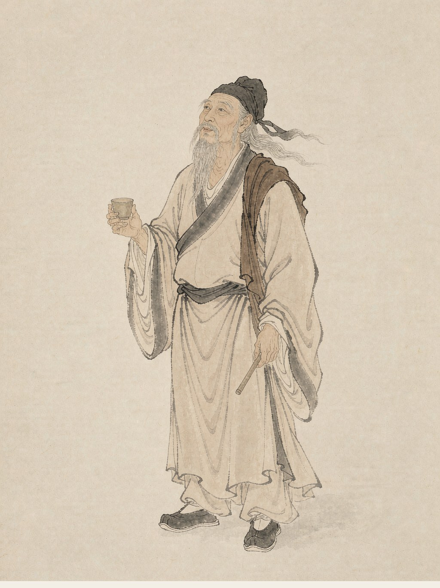

李白
唐代诗人
字太白，号青莲居士，唐代伟大的浪漫主义诗人，被后人誉为“诗仙”。其诗想象瑰奇、豪迈奔放，是盛唐气象的化身。
月下独酌
花间一壶酒，独酌无相亲。 举杯邀明月，对影成三人。 月既不解饮，影徒随我身。 暂伴月将影，行乐须及春。 我歌月徘徊，我舞影零乱。 醒时同交欢，醉后各分散。 永结无情游，相期邈云汉。
阅读全文 →将进酒
君不见黄河之水天上来，奔流到海不复回。 君不见高堂明镜悲白发，朝如青丝暮成雪。 人生得意须尽欢，莫使金樽空对月。 天生我材必有用，千金散尽还复来。 烹羊宰牛且为乐，会须一饮三百杯。 岑夫子，丹丘生，将进酒，杯莫停。 与君歌一曲，请君为我倾耳听。 钟鼓馔玉不足贵，但愿长醉不愿醒。 古来圣贤皆寂寞，惟有饮者留其名。 陈王昔时宴平乐，斗酒十千恣欢谑。 主人何为言少钱，径须沽取对君酌。 五花马，千金裘，呼儿将出换美酒，与尔同销万古愁。
阅读全文 →静夜思
床前明月光，疑是地上霜。 举头望明月，低头思故乡。
阅读全文 →